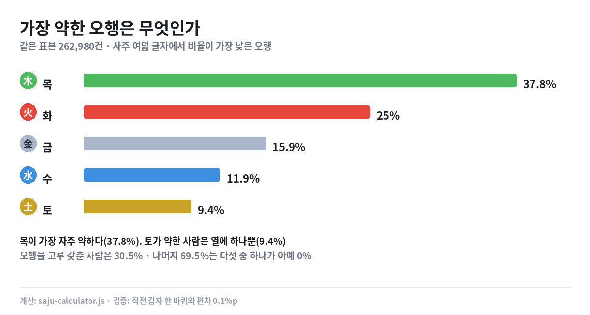

오행 이야기
사주 여덟 글자를 직접 계산해서 씁니다.
글에 나오는 숫자는 전부 재현 가능한 계산 결과이고, 계산 방법과 한계도 같이 적습니다.

키 10cm는 연봉 두 칸 — 제 계산기를 제가 뜯어봤습니다
이성 조건 계산기의 점수표를 직접 계산해 키와 연봉의 교환비를 뽑았습니다. 그리고 평균 이상은 아무 보상이 없다는 것도 같이 나왔습니다.
2026-09-19

사주에 부족한 오행, 나는 어느 방향일까 — 10명 중 7명은 하나가 비어 있습니다
262,980건을 계산했더니 69.5%는 오행 다섯 중 하나가 아예 0%였습니다. 생년월일만 넣으면 내 약한 오행과 방향이 바로 나옵니다.
2026-09-18

태어난 시간 확인하는 3가지 방법 — 모르면 사주가 72.6% 달라집니다
출생신고서·병원 기록·기억으로 태어난 시각을 찾는 방법을 정리했습니다. 21,915일을 전부 계산해 보니 같은 날이라도 시각에 따라 72.6%는 우세 오행이 바뀌었습니다.
2026-09-18

1·4·7·10월에 태어나면 토(土)가 절반 — 26만 건을 세어 봤습니다
태어난 달과 사주 오행은 관계가 있을까요. 1961~2020년생 262,980건을 직접 계산했더니 환절기 달에 토가 몰려 있었습니다.
2026-09-18